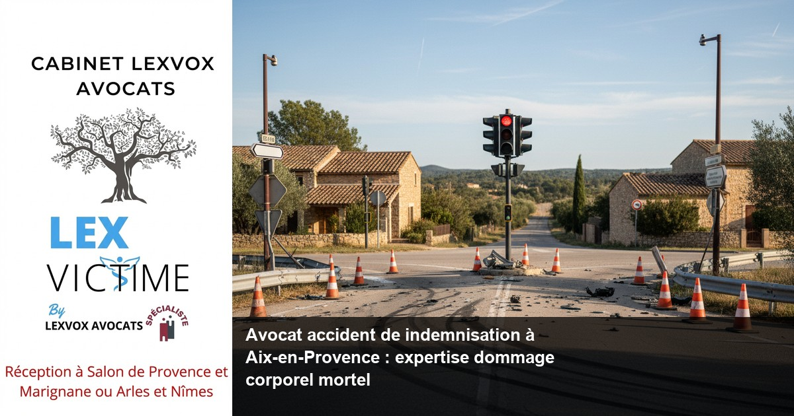

Accident de la route — Aix-en-Provence
Avocat accident mortel de la route à Aix-en-Provence : indemnisation des proches

— Par Me Patrice Humbert, avocat au barreau d'Aix-en-Provence
Un accident de la route mortel bouleverse la vie des proches de la victime. L'indemnisation des préjudices subis nécessite l'expertise d'un avocat spécialisé en dommage corporel. Me Patrice Humbert, premier avocat certifié IA de France et spécialiste CNB dommage corporel à Aix-en-Provence, vous accompagne dans cette épreuve douloureuse. Consultation gratuite 30 minutes au 04 90 54 58 10.
Obtenir la meilleure indemnisation possible : indemnisation des victimes et droit du dommage corporel à Aix-en-Provence
L'importance cruciale de l'expertise juridique en cas de décès
Lorsqu'un accident de la route entraîne le décès d'un proche, les victimes indirectes (conjoint, enfants, parents) doivent faire face à un traumatisme immense tout en engageant une procédure d'indemnisation complexe. Le droit du dommage corporel régit ces situations délicates et exige une connaissance approfondie des mécanismes d'indemnisation.
À Aix-en-Provence, capitale judiciaire des Bouches-du-Rhône et siège de la cour d'appel, Me Patrice Humbert intervient exclusivement dans le domaine du dommage corporel depuis plus de 20 ans. Cette expertise permet d'obtenir la meilleure indemnisation possible pour chaque préjudice subi par les victimes.
Les préjudices indemnisables en cas d'accident mortel
L'indemnisation des victimes d'un accident de la route mortel couvre plusieurs postes de préjudice :
Préjudices économiques :- Préjudice économique (perte de revenus du défunt)
- Frais funéraires
- Frais médicaux et d'hospitalisation
- Frais de rapatriement le cas échéant
- Préjudice moral des proches (souffrance endurée)
- Préjudice d'accompagnement
- Préjudice esthétique temporaire (si la victime a survécu quelque temps)
- Préjudice d'établissement (pour les enfants mineurs)
- Préjudice de veuvage
- Préjudice sexuel du conjoint survivant
Selon l'expérience du cabinet (20+ ans, centaines de dossiers), l'indemnisation préjudice corporel en cas de décès nécessite une évaluation précise de chaque poste. Les compagnies d'assurance tentent souvent de minorer ces préjudices, d'où l'importance de faire appel à un avocat spécialiste.
Le cadre légal de l'indemnisation
La loi Badinter du 5 juillet 1985 constitue le socle juridique de l'indemnisation des victimes d'accidents de la circulation. Cette loi, consultable sur legifrance.gouv.fr, établit le principe d'indemnisation automatique des victimes non conductrices et limite les cas d'exclusion.
Pour les accidents impliquant des véhicules terrestres à moteur sur les axes routiers d'Aix-en-Provence (A8, A51, RD9), cette loi s'applique systématiquement. Elle garantit une indemnisation rapide et intégrale, sous réserve du respect de certaines conditions.
Accompagner par un avocat : un accident de la route et faire appel à un avocat à Aix-en-Provence
L'accompagnement humain au cœur de la défense
Face à la perte d'un être cher dans un accident de la route, vous traversez une période de grande vulnérabilité. L'assistance d'un avocat expérimenté devient essentielle pour préserver vos droits tout en vous permettant de vous concentrer sur votre deuil.
Me Patrice Humbert comprend cette détresse et adapte son accompagnement à votre situation personnelle. Être accompagner par un avocat signifie bénéficier d'un soutien juridique mais aussi humain tout au long de la procédure d'indemnisation.
Les étapes de l'intervention juridique
Phase d'urgence :- Constitution du dossier médical et administratif
- Préservation des preuves de l'accident
- Contact avec l'assurance du responsable
- Déclaration des préjudices initiaux
- Suivi de l'enquête de police ou de gendarmerie
- Collaboration avec les experts en accidentologie
- Évaluation médico-légale des circonstances du décès
- Négociation avec la compagnie d'assurance
- Recours à l'expertise médicale si nécessaire
- Procédure judiciaire en cas d'échec de la voie amiable
Pourquoi choisir un avocat local à Aix-en-Provence
Choisir un avocat implanté à Aix-en-Provence présente des avantages concrets :
- Connaissance du Tribunal judiciaire d'Aix-en-Provence
- Relations établies avec les experts locaux
- Proximité avec les établissements de soins (Centre hospitalier du Pays d'Aix, Clinique Axium)
- Maîtrise des spécificités locales de circulation
Le Cabinet LEXVOX AVOCATS dispose de quatre bureaux dans les Bouches-du-Rhône (Aix-en-Provence, Salon-de-Provence, Arles, Marignane) pour assurer une proximité optimale avec ses clients.
Expert en indemnisation : défense des victimes et réparation intégrale à Aix-en-Provence
Une spécialisation reconnue officiellement
Me Patrice Humbert détient la mention de spécialisation CNB (Conseil National des Barreaux) en dommage corporel, gage de son expertise reconnue par la profession. Cette spécialisation, renouvelée régulièrement, atteste d'une formation continue et d'une pratique exclusive dans ce domaine.
Premier avocat certifié IA de France, Me Humbert utilise les nouvelles technologies pour optimiser l'analyse des dossiers tout en conservant l'approche humaine indispensable à la défense des victimes.
L'expertise au service de la réparation intégrale
La réparation intégrale constitue le principe fondamental du droit de la réparation en France. Ce concept signifie que vous devez être indemnisé de l'intégralité de vos préjudices, sans enrichissement ni appauvrissement par rapport à votre situation antérieure à l'accident.
Les outils de l'expertise :- Référentiels d'indemnisation actualisés
- Barèmes jurisprudentiels spécialisés
- Réseau d'experts médicaux indépendants
- Outils de calcul actuariel pour les préjudices futurs
Les spécificités de l'indemnisation des accidents mortels
L'indemnisation d'un accident mortel présente des particularités techniques importantes :
Évaluation des préjudices économiques :- Reconstitution de carrière de la victime décédée
- Calcul des revenus perdus jusqu'à l'âge de la retraite
- Prise en compte de l'évolution professionnelle probable
- Application des barèmes de capitalisation
- Évaluation du lien affectif avec le défunt
- Prise en compte de l'âge des victimes indirectes
- Appréciation des circonstances particulières du décès
Selon l'expérience du cabinet (20+ ans, centaines de dossiers), l'indemnisation moyenne d'un accident mortel varie considérablement selon l'âge, la profession et la situation familiale de la victime décédée.
Accident de la vie : avocat de victimes et avocat spécialisé à Aix-en-Provence
Au-delà des accidents de la route : une expertise globale
Bien que spécialisé dans les accidents de la circulation, Me Patrice Humbert intervient dans tous les accidents de la vie courante générant des dommages corporels graves ou mortels :
- Accidents médicaux et erreurs de diagnostic
- Accidents du travail avec faute inexcusable
- Accidents domestiques avec responsabilité de tiers
- Agressions et crimes avec constitution de partie civile
Cette approche globale de l'accident de la vie permet une prise en charge complète de votre situation, quelles que soient les circonstances du drame.
L'avocat de victimes : une mission particulière
Être avocat de victimes implique des qualités spécifiques :
- Empathie et écoute active
- Résistance au stress et à l'émotion
- Pugnacité face aux assureurs
- Pédagogie pour expliquer les enjeux juridiques
Cette spécialisation humaine complète l'expertise technique pour offrir un accompagnement global aux familles endeuillées.
Les accidents de la route à Aix-en-Provence : statistiques locales
Selon l'expérience du cabinet (20+ ans, centaines de dossiers), les axes les plus accidentogènes autour d'Aix-en-Provence sont :
- L'autoroute A8 (axe Marseille-Nice)
- L'A51 (liaison vers Gap et Sisteron)
- La RD9 (ancienne RN96)
- Les voies de contournement du centre-ville
Ces données locales influencent l'expertise car elles révèlent des typologies d'accidents récurrentes et des responsabilités souvent partagées entre conducteurs.
L'intervention dans les métiers de la santé
En tant qu'avocat spécialisé, Me Humbert intervient également pour les victimes d'erreurs médicales. Les victimes d'erreurs médicales peuvent subir des préjudices aussi graves que ceux résultant d'accidents de la circulation. Une maladie infectieuse contractée lors d'un soin hospitalier peut ainsi engager la responsabilité de l'établissement de santé.
La loi du 4 mars 2002 relative aux droits des malades et à la qualité du système de santé a créé des mécanismes spécifiques d'indemnisation pour ces situations. Les professionnels de santé bénéficient d'assurances spécialisées, mais l'indemnisation des victimes nécessite souvent l'intervention d'un avocat expérimenté.
Une indemnisation : assurance et expertise à Aix-en-Provence
Le rôle central de l'assurance dans l'indemnisation
Obtenir une indemnisation après un accident de la route mortel implique nécessairement de traiter avec au moins une compagnie d'assurance :
L'assureur du responsable de l'accident :- Garantie responsabilité civile obligatoire
- Couvertures complémentaires éventuelles
- Limites de garantie et franchises
- Protection juridique
- Garantie individuelle accident
- Assurance vie et invalidité
L'expertise : un enjeu majeur de l'indemnisation
L'expertise médicale constitue souvent le point d'achoppement dans les dossiers de dommage corporel. Même en cas de décès, une expertise peut être nécessaire pour :
- Déterminer les causes exactes du décès
- Évaluer les souffrances endurées avant le décès
- Rechercher d'éventuelles pathologies antérieures
- Établir le lien de causalité entre l'accident et le décès
La négociation avec les assurances
Selon l'expérience du cabinet (20+ ans, centaines de dossiers), la négociation amiable aboutit dans 80% des cas d'accidents mortels. Cette voie présente plusieurs avantages :
- Rapidité de l'indemnisation
- Économie des frais de procédure
- Maîtrise du calendrier
- Discrétion de la négociation
Cependant, la voie amiable ne doit pas conduire à accepter une indemnisation insuffisante. L'expertise de votre avocat permet d'évaluer la justesse des offres d'indemnisation.
Préjudice et honoraire : votre avocat à Aix-en-Provence
La structure tarifaire transparente du Cabinet LEXVOX
Me Patrice Humbert pratique une politique tarifaire transparente adaptée aux enjeux du dommage corporel :
Part fixe : À partir de 700 EUR HT Cette part fixe couvre :- L'étude initiale du dossier
- La constitution du dossier administratif
- Les démarches d'urgence
- La consultation gratuite de 30 minutes
- L'ampleur du préjudice
- La complexité du dossier
- La durée prévisible de la procédure
- Les risques de contestation
L'évaluation de chaque poste de préjudice
Chaque préjudice fait l'objet d'une évaluation spécifique basée sur :
Les références jurisprudentielles :- Cours d'appel de la région (Aix-en-Provence, Nîmes)
- Jurisprudence de la Cour de cassation
- Décisions des juridictions spécialisées
- Référentiel de l'Association des Paralysés de France
- Barème du Concours Médical
- Tables actuarielles de capitalisation
Cette méthode rigoureuse garantit une évaluation juste de l'ensemble de vos préjudices et une indemnisation maximale.
L'honoraire de résultat : un gage d'efficacité
L'honoraire de résultat aligne les intérêts de l'avocat sur ceux de ses clients. Plus l'indemnisation obtenue est importante, plus l'honoraire est élevé. Ce système incite naturellement l'avocat à obtenir la meilleure indemnisation possible.
De plus, l'honoraire de résultat ne s'applique que sur l'indemnisation effectivement perçue, limitant ainsi votre risque financier en cas d'échec de la procédure.
La prise en charge par les assurances
Dans de nombreux cas, vos honoraires d'avocat peuvent être pris en charge :
- Par votre assurance protection juridique
- Par l'assurance du responsable (dans certaines limites)
- Par l'aide juridictionnelle si vos ressources sont limitées
Cette prise en charge permet d'accéder à une défense juridique de qualité sans impact sur votre budget personnel.
Procédure d'indemnisation à Aix-en-Provence : les étapes avec LEXVOX AVOCATS
Phase 1 : Constitution du dossier (0 à 3 mois)
Première consultation gratuite :- Analyse de votre situation familiale
- Évaluation des circonstances de l'accident
- Identification des assurances concernées
- Explication de la procédure d'indemnisation
- Copie intégrale de l'acte de décès
- Procès-verbal de police ou de gendarmerie
- Attestations de revenus de la victime
- Justificatifs de lien de parenté
- Certificats médicaux et d'hospitalisation
- Lettre recommandée avec tous justificatifs
- Récépissé de déclaration de sinistre
- Désignation de notre cabinet comme mandataire
Phase 2 : Instruction du dossier (3 à 12 mois)
Enquête sur les circonstances de l'accident :- Suivi de l'enquête de police judiciaire
- Consultation du dossier pénal le cas échéant
- Expertise technique des véhicules
- Reconstitution des circonstances de l'accident
- Reconstitution de carrière de la victime décédée
- Calcul des préjudices économiques futurs
- Évaluation des préjudices moraux des proches
- Chiffrage des frais exposés
- Transmission des pièces complémentaires
- Réponse aux questions de l'assureur
- Suivi de l'instruction du dossier
Phase 3 : Négociation et indemnisation (6 à 18 mois)
Réception de l'offre d'indemnisation :- Analyse détaillée de chaque poste
- Comparaison avec nos évaluations
- Identification des insuffisances éventuelles
- Contre-proposition argumentée
- Échanges avec l'assurance
- Recherche d'un accord équitable
- Signature du protocole transactionnel
- Versement de l'indemnisation
- Règlement des honoraires
Cette procédure peut être accélérée en cas d'urgence financière particulière (veuve avec enfants mineurs, par exemple).
Phase 4 : Procédure judiciaire si nécessaire

Vos questions sur avocat accident de indemnisation à aix-en-provence : experti
1. Quels sont mes droits en tant que conjoint survivant ?
En tant que conjoint survivant, vous bénéficiez de droits étendus à l'indemnisation. Vos préjudices comprennent le préjudice moral (souffrance liée à la perte de votre conjoint), le préjudice économique (perte des revenus de votre époux/épouse), le préjudice de veuvage et éventuellement un préjudice sexuel. L'indemnisation tient compte de votre âge, de la durée de votre union et de votre dépendance économique vis-à-vis du défunt. Face aux compagnies d'assurance, la présence d'un avocat garantit la reconnaissance de tous vos préjudices.
2. Mes enfants mineurs ont-ils droit à une indemnisation spécifique ?
Oui, les enfants mineurs victimes du décès de l'un de leurs parents bénéficient d'une indemnisation spécifique incluant un préjudice moral, un préjudice économique jusqu'à leur majorité et au-delà, ainsi qu'un préjudice d'établissement. Ce dernier préjudice compense les difficultés que l'enfant rencontrera dans sa vie future du fait de l'absence du parent décédé. L'indemnisation est généralement placée sur un compte bloqué jusqu'à la majorité de l'enfant.
3. Combien de temps dure une procédure d'indemnisation ?
La durée d'une procédure d'indemnisation varie selon la complexité du dossier et la coopération de l'assurance. Dans les cas simples avec un responsable clairement identifié, l'indemnisation peut intervenir entre 6 et 18 mois. Si les circonstances de l'accident sont complexes ou si une procédure judiciaire devient nécessaire, le délai peut s'étendre de 2 à 4 ans. Notre expertise permet d'optimiser ces délais en anticipant les difficultés.
4. L'assurance peut-elle refuser de m'indemniser ?
L'assurance du responsable de l'accident ne peut pas refuser de vous indemniser si sa responsabilité est établie. Cependant, elle peut contester le montant des préjudices ou certains postes d'indemnisation. En cas de refus injustifié, des procédures d'urgence peuvent être engagées. La loi Badinter protège particulièrement les victimes non conductrices et limite drastiquement les possibilités d'exclusion de garantie.
5. Puis-je cumuler les indemnisations de plusieurs assurances ?
Le cumul d'indemnisations est possible mais encadré par le principe de réparation intégrale. Vous ne pouvez pas être indemnisé au-delà de votre préjudice réel. Cependant, si vous disposez de garanties individuelles (assurance vie, garantie accidents de la vie), celles-ci peuvent s'ajouter à l'indemnisation de l'assurance responsabilité civile du responsable. Notre analyse permet d'optimiser ces cumuls dans le respect de la réglementation.
6. Quels recours en cas de désaccord sur l'expertise médicale ?
En cas de désaccord sur l'expertise médicale, vous pouvez demander une contre-expertise ou solliciter l'avis d'un médecin-conseil de victimes. Si l'assurance refuse de tenir compte de cette contre-expertise, une expertise judiciaire contradictoire peut être ordonnée par le tribunal. Dans tous les cas, vous n'êtes pas lié par les conclusions de l'expert de l'assurance et conservez la possibilité de les contester.
Synthèse : votre droit à la réparation intégrale ?
Le droit du dommage corporel garantit à toute victime d'un accident le principe de réparation intégrale. Suite à un accident mortel, l'indemnisation préjudice corporel couvre l'ensemble de vos préjudices sans exception. En tant qu'avocat spécialiste, Me Patrice Humbert défend ce principe fondamental face aux compagnies d'assurance qui tentent souvent de minorer l'indemnisation des victimes d'accidents de la route. Chaque victime d'un accident a le droit d'obtenir une indemnisation intégrale correspondant exactement à ses préjudices. L'indemnisation accident ne peut être forfaitaire mais doit résulter d'une évaluation individualisée de chaque situation. Pour obtenir une indemnisation juste, il est essentiel d'être accompagner par un avocat expérimenté qui maîtrise parfaitement les mécanismes de réparation du dommage corporel. Les droits des victimes sont protégés par un arsenal juridique complet, mais leur mise en œuvre nécessite l'intervention d'un avocat spécialisé en indemnisation. L'avocat expérimenté évalue chaque poste de préjudice avec précision pour garantir une réparation du préjudice corporel optimale. En tant qu'avocat expert dans ce domaine, la mission consiste à défendre les victimes contre les stratégies de minimisation des assureurs. Il est crucial de faire appel à un avocat dès les premières démarches car les circonstances de l'accident et la procédure d'indemnisation conditionnent le résultat final. Le médecin-conseil de victimes joue également un rôle déterminant pour évaluer correctement chaque poste de préjudice. Seule cette expertise combinée permet d'atteindre la meilleure indemnisation possible. L'indemnisation juste résulte d'une approche globale prenant en compte tous les aspects de votre situation. Les indemnisations varient considérablement selon les circonstances, d'où l'importance d'une approche personnalisée. Les accidents de la vie génèrent des préjudices complexes nécessitant une indemnisation complémentaire à celle de l'assurance de base. Les victimes d'accidents de la route bénéficient de protections spécifiques, mais leur application optimale requiert la présence d'un avocat compétent. L'assistance d'un avocat permet de sécuriser l'indemnisation d'un accident en évitant les pièges procéduraux. Les victimes d'accidents subissent déjà suffisamment d'épreuves sans avoir à affronter seules les compagnies d'assurance. Les victimes d'accidents doivent savoir que leurs droits sont protégés et qu'un accident, aussi dramatique soit-il, ouvre droit à réparation. Qu'un accident survienne sur les routes d'Aix-en-Provence ou ailleurs, les principes d'indemnisation restent identiques. Le responsable de l'accident et sa compagnie d'assurance ont l'obligation légale d'indemniser intégralement les préjudices causés. Notre mission de défense des victimes d'accidents s'exerce avec détermination face à chaque compagnie d'assurance. Chaque victime d'accident mérite une attention particulière et une défense acharnée de ses intérêts. Les victimes d'accident ne doivent jamais accepter la première offre d'indemnisation sans analyse approfondie. Dans tous les cas d'accident, une évaluation experte des préjudices s'impose pour garantir vos droits.
Procédure d'indemnisation à Aix-en-Provence : les étapes avec LEXVOX ?
Première consultation gratuite — 30 min
Besoin d'un avocat spécialisé à Aix-en-Provence ? Nous évaluons votre dossier gratuitement et vous indiquons vos droits à réparation.
Cabinet LEXVOX AVOCATS — Me Patrice Humbert — Spécialisation CNB dommage corporel — Bureaux à Aix-en-Provence, Salon-de-Provence, Arles et Marignane